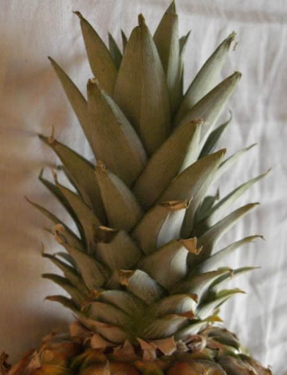
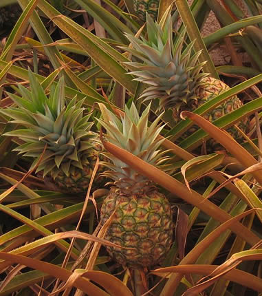
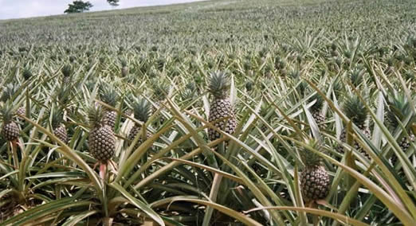

| |
| Carrots |
| Twinkies |
| Avocado |
| Pineapple |
| Turkey Sandwiches |
| Mangoes |
| Pizza |
| Potatoes |
| Other Resources |
The green prickly stuff on top of the pineapple? That’s the pineapple plant’s leaves! You’re going to put those leaves in dirt and watch them grow into a new plant! You probably won’t be able to grow a new pineapple, but it could happen! Have a grown-up cut off the leafy top of the pineapple. Make sure they cut away all the fruit, because if you plant that it will get moldy and gross. Peel off the short leaves at the bottom so you have a little stem about 2 inches wide. Let that sit out and dry for a couple days so it doesn’t rot in the soil. Fill any container at least 6 inches wide and deep with soil up to a few inches form the top. Put the pineapple top cut side down into the soil so it comes just up to the leaf bottoms. Keep it in a shady place until you see new green leaves growing in the middle, then move it to a sunny spot. Keep the soil damp by watering it about once a week. Your beautiful pineapple plant should live as long as you keep giving it water, sun, and love. |

Cut off your pineapple top like this
(Creative Commons Attribution ShareAlike 2.0 License Wikimedia user Chmee2)

Pineapples growing on the plant
(Creative Commons Attribution 2.5 License Wikimedia user MrToto )

A whole field of pineapple plants in Ghana
(Creative Commons Attribution 2.0 License Wikimedia user hiyori13 )